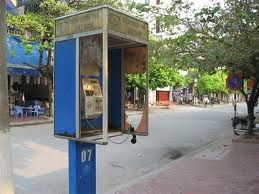

Gone are the days of whistling a 2600 Hz tone into your rotary phone. Or the era of using redboxes to get free calls from payphones - where can you find a payphone anymore nowadays? So where have all the phreakers gone? Who even remembers what phone phreaking means, and what the significance of Cap'n Crunch cereal is?

Vietnam, like many developing countries, is a country where wireless infrastructure, cellular networks and wifi, leapfrogged traditional wired networks: telephone, cable TV. Payphones (or "cardphones" which used prepaid cards since coins were inconsistently minted and still not always accepted as legal tender in Vietnam), which became increasingly common in the late 90s, are nearly extinct in Vietnam now due to mobile phones.
Throughout the world, phone systems have been converted from analog to digital. From a phreaking standpoint, it's easier for the phone companies to secure their systems as they don't need to use in-band methods (using the channel for system operators as what's used by customers) of managing their systems. Even the cellular networks are all digital and encrypted now so you can no longer just snoop in on your neighbor's conversations using a special phone (or clone another user's ESN on the old AMPS networks). Unfortunately, this means there is no tone or sound that you can play into your mobile handset in order to get free calls or anything else.
Nowadays, free long distance calling - for decades the big prize for phreakers - is ubiquitous. PBXs are freely downloadable software that anyone can run. And we don't even need physical phones to make phone calls anymore - we have software phones using Voice over IP (VoIP) which can call the plain old telephone system or simply call other softphones on the Internet.
So what does modern phone phreaking mean?
Answer: VoIP hacking, virtual PBX hacking, voicemail hacking (not really phreaking, just unauthorized access of systems), femtocell hacking for the truly adventurous, and GSM decryption for the cryptos with a lot of computing resources.
Caller ID spoofing
Caller ID is a feature that's in all cell phones, and many land lines also have this ability to see the phone number of the person that's calling you. This is how you know to answer your mother's phone call and ignore your girlfriend's, or the other way around. But did you know you could control what number is seen by the called party?
How? Example: One way is to have a real phone company set your forwarding number, which is a fake origin, and then it will be used as your caller ID value when you call out from your (VoIP) phone. Another way is to route calls through your own PBX (Asterisk).
PBX hacking
Back in the day when PBXs were only affordable to large corporations and getting access to one meant you had great resources available to you like calling out to long distance numbers for free. But now there are cheap and even free open source virtual PBX solutions that run on normal PCs running Linux like Asterisk. And of course these can be hacked. If you're running Asterisk you run the risk of remote hackers DoSing your server or hacking the Linux server that's running Asterisk. Once they're on there they can also have their way with the PBX.
Femtocell hacking
Femtocells are stations that are set up to provide buildings or rural areas which have weak signals with access to cellular networks via internet connections. Subscribers can buy femtocells from their phone companies and set them up themselves - and can even take their femtocell with them to a foreign country (yes!) and have access to their home country's phone network without incurring roaming charges. These femtocells, whose manufacturer varies by telco, may be running Linux and may be hackable (rootable) and if so can be used to eavesdrop on calls and SMSs as well as spoof and use credits from subscribers' accounts without authorization. It's like taking over a cell tower. But not all telcos even offer these for sale and it's not enough for you to just get one from a manufacturer.
GSM encryption cracking
In the old days of cell phones you could easily listen in on calls made around you. But since GSM the call traffic is encrypted from the phone to the cell tower. However, it can be possible to crack weak A5/1 GSM encryption using something called COPACOBANA. Or you could probably use Amazon EC2 to affordably and instantly bring up the enormous CPU resources combined with some rainbow tables needed to crack the cipher. Don't assume that your mobile phone calls are secure.
Voicemail hacking
Voicemail (VMB) hacking isn't that new. And not all phone providers even offer voicemail services on their lines. But for those who do it's often easy to get into another subscriber's mailbox. Spoof your caller ID to look like theirs and often you won't be asked for any passcode to enter your voicemail. Other ways are to guess or social engineer the PIN code which you can then use to access the mailbox. Old voicemail systems used to have default codes which you could use to have fun like creating your own VMBs.
See: http://en.wikipedia.org/wiki/News_International_phone_hacking_scandal
Another kind of hacking: mobile phone rooting and modification
Generally, when I use the word "hacking" above it refers to unauthorized access of systems. But sometimes the system you want to "hack" is your own property. Mobile phones today are powerful computers running advanced software based on open source code. But it doesn't mean that the manufacturers want to give you free reign or access to what's inside. Fortunately, hacker communities exist to find holes in our phones which enable them to be "rooted" after which we can control the software running on them and by controlling the software we can control our hardware.
As always, especially in Vietnam, protect your accounts and privacy when online with an encrypted connection to a VPN.
Attachments:
{kind=link}
The world is flat. Globalization means it's possible to get customer service from India on products made in China sold in America. But it also means you can move your wealth and yourself from high cost geographical areas to ones where labor is cheap as is the cost of living.
People are more hesitant to move to another country when they have bills to pay and they need to worry about finding a good job abroad. For retirees, a country's job market has much less value. For a retiree, it makes sense to live someplace where wages are low, opposite to the rest of the working population. American retirees are increasingly retiring abroad.
Typical foreign countries for Americans to retire to are in Spain and Latin America as well as France, although France and the rest of Old Europe are quite expensive due to the weak dollar relative to the euro. Some Latin American countries like El Salvador use the US dollar, others like Belize, peg their currencies to the dollar.
The more adventurous Americans consider retiring to Asia, especially cheap Southeast Asia. Only the wealthy consider retiring (and denouncing their American citizenship for tax purposes!) to Singapore. But the Philippines is a popular country for retirees, especially American war veterans. But why not Vietnam?
Cost
Cost of living in Vietnam is cheap. That blog post tells you all you need to know about the cost of living in Saigon. The most expensive part of Vietnam (or most of Southeast Asia) is the plane ticket there and if you're planning to stay long term, with few and infrequent trips back to North America then you could live in Saigon or Hanoi for $600/month or spend double that and live two lives. I will tell you what you need to know to find cheap housing in Vietnam. Inflation, out of control for many years, is now back to single digits. You can argue that other poor countries are cheap to live in as well, but Ho Chi Minh City is pretty inexpensive for a "city" and there are always small towns in the countryside (or Mekong Delta) which are an order of magnitude cheaper.
Healthcare
Vietnam doesn't have the best hospitals in the region but quality of healthcare is improving with newer international hospitals such as FV (Franco-Viet) Hospital. Nonetheless, healthcare is still an issue. Cost of healthcare is extremely cheap. Prescription medicines are usually generic and cost nickels. You can buy pills by the pill. Medical procedures without medical insurance are affordable. For more serious hospital needs many expats fly to Bangkok, which is a 1 hour and often under $100 flight away. However, most medical care and procedures can be done in Vietnamese hospitals now. But this is a concern for expats in all developing Southeast Asian countries. Vietnam itself is even a medical tourism receiving destination for people in Cambodia.
Things to do
Vietnam has islands, beaches, 2.5 major cities, an incredible variety of unique cafes. But perhaps more importantly, beer and liquor are really cheap. (Vietnam is neither a religiously conservative Muslim country nor a nanny state.) Bottles of popular beer are around 75 cents/ea. Pirated DVDs are $0.50/ea, and cable TV, which has American movie channels like HBO and Cinemax as well as foreign service channels from countries like Japan, Korea, Singapore, France, and Germany, is maybe $5/month. I hear it now costs an average of $23 to watch a movie in Japan. In Saigon, movie theaters are 10-15% of that cost! Watching traffic in Ho Chi Minh City from a sidewalk cafe is free, or the cost of a 50 cent coffee. Vietnam's a very foreign country - you'll find something interesting to do.
Expat community
You won't be alone, although you may be forced to rub elbows with Australians, Kiwis, Canadians, British, and other people from all over the world. You may even meet some Vietnamese people. There are a number of American-owned restaurants and bars and plenty more which serve "American" food like pizza, burgers, and tacos. Americans gather to celebrate the 4th of July and Thanksgiving where turkey is available at some restaurants and hotels in Saigon. There is also a Burger King at Tan Son Nhat Airport, Domino's delivery all over Ho Chi Minh City, and KFC's on nearly every corner.
Vietnam also has the benefit of not having of not having the reputation of being a sex tourism destination like Thailand, Cambodia, or the Philippines. You won't have to convince family and friends back home that you're not just here to buy sex.
Language
English is not one of Vietnam's or most of Asia's strong points, although Singapore, Malaysia, and the Philippines have the highest percentage of decent English speakers. However, thousands of Americans and Europeans live and work in Vietnam without speaking even basic conversational Vietnamese. I would recommend learning some Vietnamese but it's not at all necessary. Vietnamese language lessons start from $2.50 an hour. On the other hand, English teachers are in huge demand in Vietnam. You can retire in Vietnam and make $15/hour or more teaching English on the side.
Visas
Some countries around the world have retirement visas. For example, Malaysia and the Philippines both have special visas for retirees. Vietnam doesn't have one but it's easy for a retiree from the US or other Western countries to live in Vietnam indefinitely as a tourist. The cost is about $25/month until you marry a Vietnamese girl. Vietnam C2 tourist visas can be renewed indefinitely. You could also set up a business in Vietnam and get a business visa. "Set up a business."
Climate
Even within the States, Americans are preferring to retire in warmer climates - Florida, Arizona, Nevada. Vietnam has both tropical weather in the south and four seasons in the north. The temperature is warm all year round in Saigon whereas Hanoi's winters dip into the 50s, and it's not unheard of for it to actually snow in Sapa. I prefer warm to cold, but sometimes Saigon does get too hot.
Religion
Vietnam is culturally and historically a Buddhist country. According to government statistics though it's more atheist in its beliefs. But, significantly, some 1/10th of the country is Christian and there are churches everywhere. Unlike Indonesia, belonging to an organized religion is not legally required here.
Which is not to say that Vietnam is Shangri La for retiring expats but for the slightly adventurous who can stand to be away from "home" for many months at a time, who enjoy warmer weather, who appreciate value when it comes to money and don't want to sink their savings into a "retirement visa account", and who prefer being able to drink and eat as much as they want - then why not ask other expats why Vietnam isn't the place to retire?
What to do if you're a content provider in Vietnam?
If you're fairly established as a Party-affiliated Vietnamese newspaper then you have probably been selling banner ads for years on your online properties. Maybe you have enough online properties that they constitute a small ad hoc online ad network which you can sell to advertisers. If you're smaller than that then you should be concentrating on producing content rather than developing the ad selling product. So you'd need to find some service to take care of selling your available ad space inventory.
How online ads are sold outside of Vietnam
The first online ad marketplace that should come to anyone's mind is Google with its AdWords and AdSense products (which complement each other as supply and demand). I've played around with Google AdSense (the advertising product for publishers) on this site but it may not be appropriate for Vietnamese publishers. As an American it's easy for me to connect to the US financial system. Vietnamese people would have trouble opening up a US bank and the Vietnamese banking system is barely connected to itself (making homegrown PayPal clones even more difficult to pull off) much less to the US or international banking system. It's hard to move money into and out of Vietnam, although regulations make inflows of cash much easier than outflows. And due to the large amount of fraud originating from Vietnam it's hard to get outsiders to allow normal Vietnamese people to receive money, since once it enters Vietnam it's hard to get it back out if there are any problems, outside of the remittance networks. Until very recently it wasn't possible to use PayPal as a Vietnamese person here and it's still extremely rare.
If you're one of Vietnam's major publishers then you don't care too much about homegrown ad networks since they only reduce your monopoly on ad space, while pushing down prices and encouraging transparency which could force you to be more honest about your product and push prices down even further.
Vietnamese ad networks for Vietnamese content websites!
But having more available ad networks to Vietnamese content producers helps develop a strong web ecosystem for and by Vietnamese people, giving them ways to earn money both domestically and from foreign companies wanting to market to Vietnam. Blogs and other content websites could potentially give Vietnam's economy a tiny push in the right direction although currently it's risky to plan a business around content websites in Vietnam for a number of reasons and monetization is just one of them. (Just recently, Zing, a large content network with news, a social network, and lots of downloadable but unlicensed (pirated) music got dropped by major advertisers like Samsung, Coca Cola, Canon, Yamaha, Intel, etc. precisely because of the latter - they didn't want to associate themselves with an illegal music downloading site, but without the mp3s it would be hard for Zing to get traffic.)
So without further ado here are the online ad networks in and targeting Vietnam:
- ComScore put Innity in first place (of only two measured competitors?) for ad network size in Vietnam in February of 2011 with 900,000 average daily visitors. I really can't say whether Innity, from Malaysia and serving all of Southeast Asia, is the biggest ad network running in Vietnam.
- VietAd, part of IDG Vietnam's portfolio, running since May of 2007. According to them:
"VietAd Ad-Network is an intermediate system connecting sellers and buyers of online advertising. In other words, VietAd operates as an trading platform helping website owners to sell advertising, individuals and enterprises to advertises; both of them can save time and cost while they still have effective advertising campaigns."
"After more than two years on the market, VietAd attracted nearly 1,000 quality media, news, commentary and entertainment websites in Vietnam, served more than 3 billion Ad views and reached 400 million website hits per month."
- AdMarket, a product from AdMicro which is part of BarCamp Saigon sponsor VC Corp. (not to be confused with MicroAd which just entered Vietnam from Japan). Online advertising from 900đ/click and reaching up to 25 million people.
- AdNet.vn from PeaceSoft (NganLuong, eBay.vn, ChoDienTu)
- Ambient Digital Network (minimum payout payment of 300,000 VND) based in Ho Chi Minh City.
- VietBUZZad
- AdMax Network in South East Asia, based in Singapore
- AdBay, partner of PeaceSoft and VietBUZZad.
- AdBay.vn in Hanoi
- CleverAds, a local Google AdWords partner who helps companies set up their AdWords campaigns, also claim to have their own AdNetwork.
- Some hints of an ad network (Fmob) coming from Joomlart. Will have to ask him about that soon.
- New from FPT, eClick.vn
As mentioned, large news sites have their own ad networks. I skipped some really pathetically small ad networks. If you have anything to share about the ad networks listed above -please- post a comment. :)
One question I have and I welcome any theories:
How long before MJ Group (NhomMua, DiaDiem) or Rocket Internet, both big consumers of online ad space in Vietnam, decide to roll their own ad networks?
In South Vietnam, like the rest of tropical Southeast Asia (but not North Vietnam), there are only two seasons: rainy season and dry season. Hanoi has the traditional four seasons with mild but cold winters.
The actual timing of monsoon seasons varies from country to country and there are many regional monsoons throughout the world, including the United States. In Saigon and the Mekong Delta the dry season is from about November to February (around Tet) after which the weather transitions into rainy season around June. April and May can be uncomfortably hot without the respite provided by rains.
The difference is not just in precipitation but also temperature. The temperature range for Ho Chi Minh City throughout the year is generally 25C to 33C, whereas in the hottest days of May it may reach a max of 35C and the coldest nights of December may reach as low as 20C. For travelers who want to enjoy the coolest and driest weather then the months of November, December, and January would be the best, although travelers to Da Lat can come any time of the year and enjoy cool weather.
Tropical Storm Weather
During the wet season, there are also many tropical storms and typhoons off the sea to the east. These storm systems often batter the Philippines and then head to central or northern Vietnam and usually only cause heavy rain to fall on Saigon which rarely gets directly hit.
How should you prepare for Vietnam's weather?
1. Bring an umbrella! Vietnamese people seldom use umbrellas and when they do it's to block the sun not rain. Umbrellas are not that easy to buy in Vietnam.
2. Most of the year it can be pretty sunny although the cooler weather is accompanied by overcast skies. Vietnamese people generally cover their skin with long sleeves and pants (and extra socks, gloves, and face masks) to avoid sun exposure. More foreigners don't, and so may want to use some sun screen which can be purchased at Western-style pharmacies here.
3. You can buy various rain coats here but mostly they are targeting bike riders, who need freedom of movement of their legs thus exposing the legs to rain and puddle splashes. You can buy them for around $1. You can buy cheap and easily ripped ponchos for around 4 per $1 and these come in small enough packs to carry with you. There are some interesting only-in-Vietnam raincoats such as ones with two head-holes so both the driver and passenger on a bike can share one rain coat, and also rain coats with a clear window in front in order to allow a bike's headlights to shine through.
4. Wear comfortable walking sandals. Most tourists walk a lot and they stick out because they're the only ones walking. When it rains your feet will get wet and you may be forced to walk through puddles. You don't want to wear socks or shoes that don't wash and dry easily.
When it rains, it pours
During the normal rainy season, there are many consecutive days where it will rain shortly every day. People who get caught driving in the rain will often pull over and seek shelter in front of shops or at bus stops. They should probably just ride busses more during the rainy season, but that's another topic altogether! It's best not to have any set schedule during the rainy season that way you can wait out any sudden downpours rather than trying to make appointments. You will find that Vietnamese people will use heavy rain as an excuse for not coming somewhere on time.
It's that time of the year again. Flood time!
Saigon and Vietnam's Mekong Delta generally has two seasons - rainy and wet. But at the end of the year somewhat coinciding with the dry season is high tide season where the highest tide level maxes out some meters above low tide. Each year the effects of high tide on Ho Chi Minh City get worse, not just due to climate change or rising sea levels, but due to 1) urban sprawl taking over former urban flood plains which would have absorbed some rain water (rain water just makes the problem worse but isn't the root cause) with construction and paving over of land with impermeable surfaces, as well as 2) a general sinking of the city due to (illegal) leaching of underground water supplies reducing the water table level and 3) lost efficiency of canals where piles of trash thrown in the rivers is blocking the flow of water back out
This week's high tide times so you know when your streets will be flooded: (data comes from Saigon Port dumped into a Google Doc which is then proxied through this site to overcome cross-site script hacking in order to hide the days outside of this week)
- tomo's blog
- Login to post comments
- Comments
Telecommunications in Vietnam visualized with some network maps showing both international and domestic peering arrangements between ISPs. Bookmark this page and I'll add more maps as I find them.
For international bandwidth VNPT (VDC) is important. For domestic internet look for connections through VNIX. VNPT, FPT, Viettel, NetNam, SPT, even VinaGame and Google.


Information about server hosting in Vietnam
Information about cloud hosting and content delivery network access from Vietnam
{kind=link}
{kind=link}
I've been doing some testing on a plethora of content delivery networks using cloudharmony.com's speedtest service. Testing from multiple ISPs in Vietnam, during the most recent undersea cable outage, it becomes clear that, although none of the CDNs publicly have datacenters in Vietnam, a small handfull of networks like Edgecast CDN (via http://www.speedyrails.com/) come out on top as winners (except for an anomalous reading of small file size downloading from one ISP). In these tests, performance of poor hosts relative to the top was as much as 20 times slower, meaning CDN selection without taking into consideration the real world results in Vietnam can mean you're throwing a lot of money away. Poorly performing content delivery networks were more or less not any faster than hosting in the US.
Limelight CDN also had some of the best overall results, better than Edgecast in some cases.
VoxCAST CDN had a surprisingly low latency time suggesting it could be closer to Vietnam than anything in Singapore, but VoxCAST (Internap) do have a Singaporean datacenter which is probably just faster than other points in Singapore. Unfortunately, the transfer speeds were too low. Internap's CDN taken into consideration alone fared poorly. Edgecast state they use Equinix Singapore Exchange so it may be worth looking into colocating there.
Windows Azure CDN had some promising results in some tests whereas other tests failed. I didn't investigate further when CDNs failed, assuming they should not fail.
What may be more surprising is who isn't the winner here: Amazon
Amazon EC2 instances in both Singapore and Tokyo (just for comparison) performed poorly both in terms of latency and throughput. Amazon's CloudFront service did no better.
Asia-America Gateway undersea cable outage
At the time of writing, the AAG internet cable that connects to Vietnam at Vung Tau's landing station, thus providing FPT (although Viettel and VNPT do also use AAG) in Ho Chi Minh City and its subscribers with international bandwidth to Hong Kong, Singapore, and points beyond in the US, has been cut or damaged again. The cable experiences cuts both at the Vung Tau cable landing station as well as in the main trunk when all traffic along the cable would be affected. It is one of several international links to Vietnamese ISPs such as SEA-ME-WE 3 (but not SEA-ME-WE 4) which connects to Vietnam in Da Nang and links Southeast Asia with East Asia, Australia, the Middle East, and Western Europe. TVH and TGN-Intra Asia Cable System also land in Vung Tau connecting Southern Vietnam to the greater Internet. Vietnam also has terrestrial internet connections to China.
[Update: The AAG cable is being repaired from October 25, 2012 until November 4.]
One evening while on a brief holiday at sea in Vung Tau I got a phone call.
"Anh Tomo, can you do me a favor?"
One early thing I learned about Vietnamese interpersonal relations is that people are much more forward when it comes to asking for favors than Americans might be. There isn't the hesitation to owe other people favors that keeps me from asking in most situations.
Around this time I had begun practicing a new philosophy though. Basically, like the Jim Carrey movie "Yes Man" I started saying "yes!" to invitations and requests that I would have probably hemmed and hawed at in the past. This has led to some awesome times and amazing new friendships in Vietnam. But there have also been many moments of great regret.
This time the request was to be an emcee.
Some people (like my friend Minh) are (by whatever means (whether natural tendency or hard work and practice)) good emcees. They are able to talk continuously and control the flow of the audience as the situation requires.
A good MC has a bunch of qualities and I basically had none of them.
How to be an MC when you're not an MC:
1) Don't care.
2) Smile. (I'm told I don't.)
3) Have a good sense of humor. LOL.
4) Look pretty. Smiling helps and being funny leads to smiling.
That's about all I can really teach about that subject.
The event in question was a "date auction" for a charity I'd never heard of called Helping Hand Saigon. My first thought was "OMG, selling young Vietnamese girls to foreigners - can I really be a part of such an operation?"
As it turns out, they were auctioning off young Vietnamese men as well. A Vietnamese male singer-song writer also showed up, performed a few songs, and then auctioned himself off, garnering over a million dongs. Later I saw one of his music videos on TV so I guess it was a bargain.
All the money raised was going to charity and not the girls. The charity would then help educate poor Vietnamese kids. The auction winners would get contact details of the won "lot" in order to arrange a coffee, movie, or other PG-rated date. So not at a short time hotel.
There is a point to this blog post. Tomorrow night (this Saturday night) Helping Hand Saigon is having their second date auction!
If you want to do some online window shopping before deciding whether or not to go you can see the date auction candidate's photos on Facebook.
If you are interested in buying a cheap Vietnamese bride then Helping Hand Saigon's Date Auction will only waste your time. If you really do want to find a Vietnamese bride I recommend you just spend some time in Vietnam, volunteering and meeting people.
Useful Errata:
Time: 5:30pm August 25th, 2012
Location: H&M Lounge, 101 Suong Nguyet Anh, District 1
My friend Grover and I have a lot of mutual friends as I noticed on Facebook one day. And I know that I have a lot of friends with whom I share a large number of friends. I got curious and asked myself: "Who do I have the most shared friends with?" This question turned into a Facebook FQL query which gave me the data. Then I decided to turn it into a "product" and ended up learning stuff about Facebook's PHP and JavaScript SDKs.
The final result is this Facebook App: Saigonist Mutual Friends.
Just enable the app and you'll see a list of your top 10 friends with mutual friends. I got my answer: my friend Jodie and I share 158 friends.
--
Next steps? I'd like to visualize what cliques or subnetworks exist within my Facebook network...
- tomo's blog
- Login to post comments
- Comments
Attention English teachers living in Saigon: My friend has an English center on Tu Xuong Street in District 3 and is in urgent need of a substitute English teacher, and more permanent staff for the future. Please read the following then either call 848. 39326594 or Create a Teacher Listing to be notified about other open English (or Vietnamese) teaching or tutoring jobs around Vietnam:
I am looking for a substitute teacher at my center for a couple weeks for 2 advance classes (students, working adults) (Until August 23rd with option to continue long terms and a lot more hours). I asking around and guess it is good to ask within the circle of people I know.
I will need a teacher as early as next week for:
Thurseday evening 5.45 - 7.15pm
Thurseday morning - 8.45 - 10.15am
These are communication english classes (only focus on speaking activities in class for students)
Advance 1 is 15usd/hr
The topics from week 1 to week 10 are:
1) Intro
2) Travel
3) Describing People – Comparisons
4) Worry Advice
5) Advertising
a) Project: Design a totally new imaginary product and create a 3-minute commercial
6) Romance
7) Future
8) Crime
9) Technology
10) Telling a Story
But you can improvise.
Thanks and look forward to hearing from you.
Hieu M. Hoang
US Study Advising Center - Nivaco Ltd.
63 Tu Xuong District 3
Ho Chi Minh City, Viet Nam
Tel: 848. 39326594, Fax: 848.39326590
Website: www.nivacovn.com
Again, if you want to be notified of other odd teaching jobs or school openings or tutoring requests, enlist in the free Saigonist Vietnam teacher directory service.
This simply service is dedicated to both Vietnamese and English teachers. I hope that it can help some friends.
© 2010-2014 Saigonist.
Recent comments
1 year 11 weeks ago
2 years 3 days ago
2 years 1 week ago
2 years 3 weeks ago
2 years 19 weeks ago
2 years 19 weeks ago
2 years 19 weeks ago
2 years 19 weeks ago
2 years 19 weeks ago
2 years 19 weeks ago